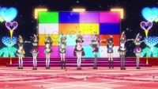
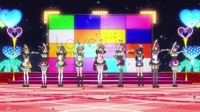

Css-love-live-stage-tvs-background
CSS made imitation of an anime prop
View the Project on GitHub lawrenceabaeo/css-love-live-stage-tvs-background
Make That Background in CSS!
Click here to see this project in action!
What is this?
 

{kind=link}
This mini CSS project copies the backdrop of tv screens seen in the Love Live School Idol ‘Mogyutto "love" de Sekkin Chuu!’ Promotional Video (click here to see video). Love Live School Idol is a Japanese entertainment franchise about a fictional group of nine high school girls that perform as a group singing ‘School Idols’.
This project can be viewed here:
http://lawrenceabaeo.github.io/css-love-live-stage-tvs-background/mogyutto-backdrop/main.html
You can download a picture file version of this same webpage here:
Click here to download picture file
{kind=link}
Features
Scalable. The font and display should be resizable while maintaining the original grid layout.
Why did I make this?
I wanted an imitation backdrop to display on a real monitor (or phone, or tablet); this would be a backdrop for anime figures in real life. It was also a test to recall/relearn css skills, and a challenge to learn more.
What tech things were needed?
Font
The font is Dotline, created by ‘Honey and Death’, and was downloaded from here: http://www.fontspace.com/honey-and-death/dotline
Skills that were learned:
text-shadow color opacity z-index positioning (absolute/relative/static) basic box-model box-sizing using css table versus html table maintaining aspect ratio while scaling (for the grids, used padding-width, for the fonts used viewport units)